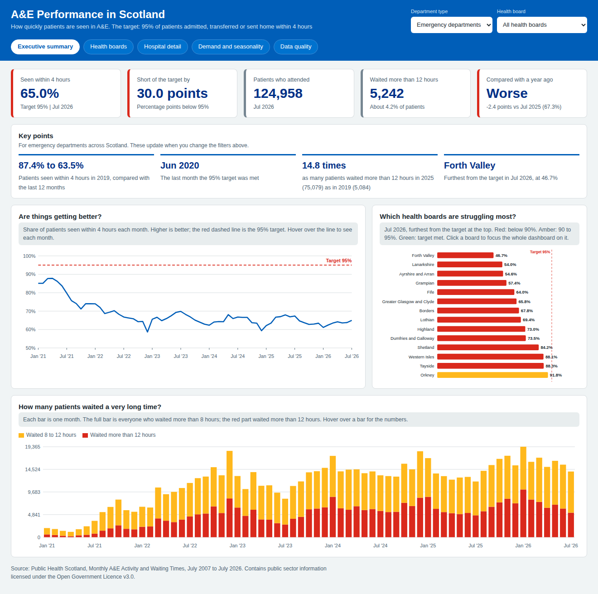

Healthcare | SQL Server and business intelligence
Where Scotland’s A&E 4-hour target is being missed
A SQL Server data warehouse and five-page dashboard built on 19 years of Public Health Scotland data, for national, health board and hospital managers.
- 63.5% of patients seen within 4 hours over the last year, against a 95% target and 87.4% in 2019
- 12-hour waits up almost fifteen-fold since 2019, to 75,079 patients in 2025
- 11 automated quality checks, validated against the published figures
SQL Server, star schema, Power BI (DAX), requirements and KPI design